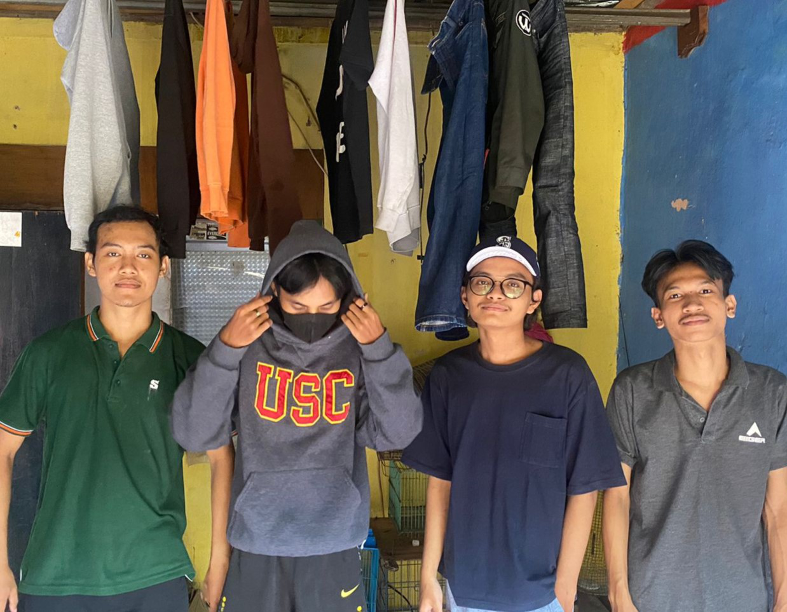

Kelompok 7
-Whijianto Pudjo Rezkiva
-Rijal Fadilah
-Dimas Fajri
-Fajrin Putra Bangsa
-Wahyu Ragil Saputra
Pengembangan ilmu di Indonesia bisa dilakukan melalui beberapa strategi yang melibatkan berbagai pihak, termasuk pemerintah, lembaga pendidikan, dan masyarakat umum. Berikut beberapa strategi yang bisa dipertimbangkan:
1. Investasi dalam Pendidikan Peningkatan investasi dalam sistem pendidikan dari tingkat dasar hingga tinggi sangat penting. Ini termasuk pengadaan fasilitas, pengembangan kurikulum yang relevan, pelatihan guru, dan akses yang lebih luas terhadap pendidikan berkualitas.
2. Riset dan Pengembangan Mendorong penelitian ilmiah yang inovatif dan terkini dengan memberikan dukungan finansial dan infrastruktur yang diperlukan. Keterlibatan aktif dari lembaga pemerintah, universitas, dan sektor swasta dapat meningkatkan kolaborasi dalam penelitian.
3. Kolaborasi Internasional Memperluas kerja sama dengan lembaga dan ilmuwan dari negara lain dapat memperkaya pengetahuan dan memperluas akses terhadap sumber daya dan teknologi baru.
4. Pengembangan Sumber Daya Manusia Mendorong pengembangan keterampilan dan pengetahuan melalui pelatihan, workshop, dan seminar untuk memastikan para profesional memiliki pengetahuan terbaru dalam bidang mereka.
5. Pembangunan Infrastruktur Teknologi Memperluas akses terhadap infrastruktur teknologi seperti internet cepat dan perangkat lunak yang diperlukan untuk mendukung penelitian dan pengembangan ilmu.
6. Pendorong Kewirausahaan dan Inovasi Mendorong budaya inovasi dan kewirausahaan dapat memotivasi para ilmuwan dan peneliti untuk mengeksplorasi ide-ide baru dan mendorong aplikasi praktis dari pengetahuan yang ada.
7. Pengembangan Kebijakan Perlu adanya kebijakan yang mendukung pengembangan ilmu pengetahuan, termasuk insentif pajak, dana riset, dan pengakuan terhadap karya ilmiah yang signifikan.
8. Edukasi Masyarakat Meningkatkan literasi ilmiah dan edukasi masyarakat tentang pentingnya ilmu pengetahuan bagi perkembangan negara dan mendorong minat terhadap pengetahuan.
Penjelasan Strategi Pengembangan Ilmu Di Indonesia
Strategi-strategi ini, jika dilakukan dengan komitmen yang kuat dari berbagai pihak, dapat mempercepat pengembangan ilmu di Indonesia, memperkuat potensi sumber daya manusia, dan mendorong kemajuan dalam berbagai bidang ilmu pengetahuan. Investasi dalam Pendidikan dan Penelitian: Peningkatan investasi dalam sektor pendidikan dan penelitian menjadi kunci. Dana yang cukup diperlukan untuk meningkatkan infrastruktur, sarana, dan peningkatan kompetensi para peneliti dan pendidik. Kolaborasi dan Kemitraan: Kerja sama antara universitas, lembaga riset, industri, dan pemerintah dapat mendorong pengembangan ilmu yang lebih luas. Kemitraan ini memungkinkan pertukaran pengetahuan, sumber daya, dan teknologi yang diperlukan untuk inovasi. Peningkatan Kualitas Sumber Daya Manusia: Fokus pada peningkatan kualitas pendidikan guru, dosen, peneliti, dan tenaga kerja dalam bidang ilmu tertentu sangat penting. Pelatihan dan pengembangan profesional yang berkelanjutan diperlukan untuk menjaga kualitas dan keterampilan.
Pengertian Strategi Pengembangan Ilmu Di Indonesia
Strategi pengembangan ilmu di Indonesia mengacu pada serangkaian rencana atau langkah-langkah yang dirancang untuk memajukan bidang pendidikan, riset, dan inovasi di negara tersebut. Ini melibatkan upaya konkret untuk meningkatkan kualitas pendidikan, memperkuat kemampuan penelitian, dan mendorong inovasi dalam berbagai bidang ilmu pengetahuan. Pengembangan ilmu di Indonesia melibatkan: Perbaikan Sistem Pendidikan: Meningkatkan kualitas sistem pendidikan mulai dari tingkat dasar hingga perguruan tinggi untuk menciptakan landasan yang kuat bagi pengembangan ilmu pengetahuan. Peningkatan Riset dan Inovasi: Mendorong penelitian yang berkualitas tinggi dan inovasi melalui dukungan finansial, fasilitas penelitian yang memadai, serta kolaborasi antara universitas, lembaga riset, industri, dan pemerintah. Pengembangan Infrastruktur dan Sumber Daya Manusia: Membangun infrastruktur riset yang modern dan memperkuat keterampilan serta pengetahuan para peneliti, dosen, dan mahasiswa untuk memajukan ilmu pengetahuan.
Tujuan Dan Fungsi Strategi Pengembangan Ilmu Di Indonesia
Tujuan utama dari strategi pengembangan ilmu di Indonesia adalah:
- Meningkatkan Kualitas Pendidikan: Strategi ini bertujuan untuk meningkatkan kualitas pendidikan di semua tingkatan, dari sekolah dasar hingga perguruan tinggi, agar menghasilkan lulusan yang kompeten dan siap menghadapi tantangan zaman.
- Pengembangan Kemampuan Riset: Fokus pada peningkatan kemampuan riset melalui pembangunan infrastruktur riset yang memadai dan pemberian dukungan finansial untuk menghasilkan penelitian berkualitas tinggi.
- Mendorong Inovasi dan Kreativitas: Strategi ini bertujuan untuk mendorong budaya inovasi dan kreativitas di kalangan pendidik, peneliti, dan masyarakat umum untuk menciptakan solusi yang lebih baik bagi berbagai masalah yang dihadapi.
Fungsi strategi pengembangan ilmu di Indonesia meliputi:
- Membentuk Landasan yang Kuat: Strategi ini membentuk landasan yang kokoh bagi pengembangan ilmu pengetahuan dan teknologi, yang menjadi pondasi bagi kemajuan ekonomi, sosial, dan budaya.
- Mendorong Pertumbuhan Ekonomi: Inovasi dan penelitian yang dihasilkan dari strategi ini dapat mendukung pertumbuhan ekonomi melalui pengembangan produk dan layanan yang lebih baik.
- Memberikan Solusi bagi Tantangan Sosial: Dengan fokus pada penelitian dan inovasi, strategi ini bertujuan untuk memberikan solusi terhadap berbagai masalah sosial, seperti kesehatan, lingkungan, dan keberlanjutan.
Menurut Ahli Strategi Pengembangan Ilmu DI Indonesia
Pendapat ahli strategi pengembangan ilmu di Indonesia dapat bervariasi tergantung pada latar belakang, keahlian, dan pengalaman masing-masing. Namun, secara umum, para ahli dalam bidang ini cenderung menyoroti beberapa poin kunci:
- Penguatan Infrastruktur Penelitian: Banyak ahli menekankan perlunya investasi yang lebih besar dalam infrastruktur penelitian, termasuk pembangunan laboratorium yang modern dan fasilitas riset yang memadai.
- Kolaborasi Multi-Sektor: Ahli strategi pengembangan ilmu menyoroti pentingnya kerjasama antara universitas, industri, pemerintah, dan lembaga riset sebagai faktor kunci dalam mempercepat inovasi dan aplikasi penelitian.
- Peningkatan Kualitas Pendidikan dan Riset: Menyediakan sumber daya manusia yang berkualitas tinggi dalam bidang ilmu pengetahuan melalui pendidikan yang berkualitas dan program pelatihan bagi peneliti.
Sementara itu, setiap ahli mungkin memiliki perspektif uniknya sendiri, tetapi keseluruhan, mereka sepakat bahwa untuk mengembangkan ilmu di Indonesia, perlu adanya integrasi antara berbagai pihak serta komitmen yang kuat dari berbagai sektor untuk mencapai tujuan bersama dalam pengembangan ilmu pengetahuan dan teknologi.